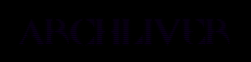

NOTE: This site is non-indexed, so you can only view this site if you've been given the URL.
October 19th 2026
Follow the goat with the bell!
(I really have nothing to say today, I just wanted to add last week to the blog-archive real quick. Have a great night everybody!)
October 21st 2026
I hope you all are having a spooky day because I have some great news. My New DOOM WAD titled "ArchLiver's Spooky Halloween Special!" is out now! Go check it out!
October 22nd 2026
Hello again, I hope everyone is doing great. Todays update is a bit different, as I thought I'd use this one as a way to quickly honor and remember one of my many musical influences, Daisy Berkowitz / Scott Putesky, as today marks 9 years since his passing. I've always been fascinated by his specific style of guitar-playing especially, it was like a very odd Industrial fused with psychadelic rock kind of sound, some surf-rock influences too. Anyways, I wanted to keep this one short and sweet, so I'll wrap it up here, May he rest in peace.
October 24th 2026
For some damn reason, I still have my computer. I should have sent this damn thing off 3 days ago... Anyways, I suppose I can squeeze in a few more updates. I might be able to put together some weird dark-ambient track, maybe... Anyways, I hope anyone reading this is having a great night!
Archliver - 2026